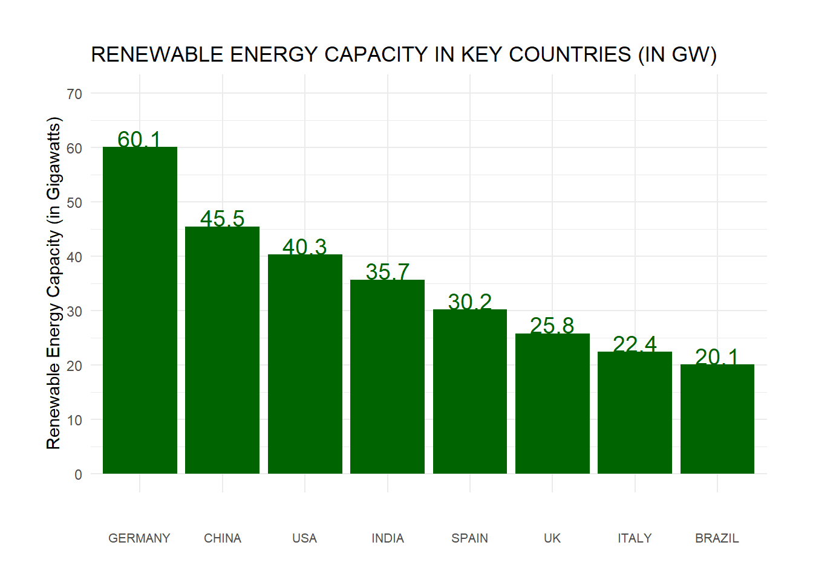
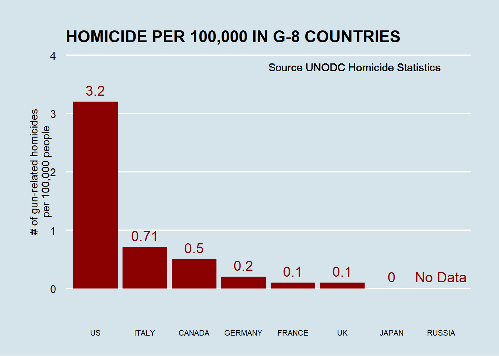
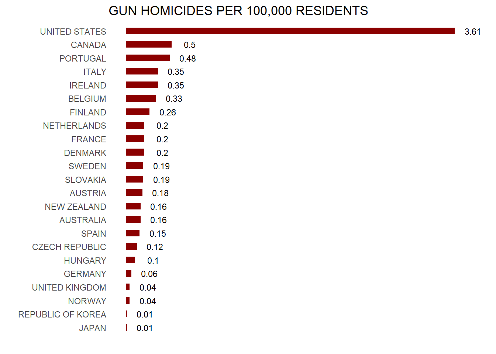
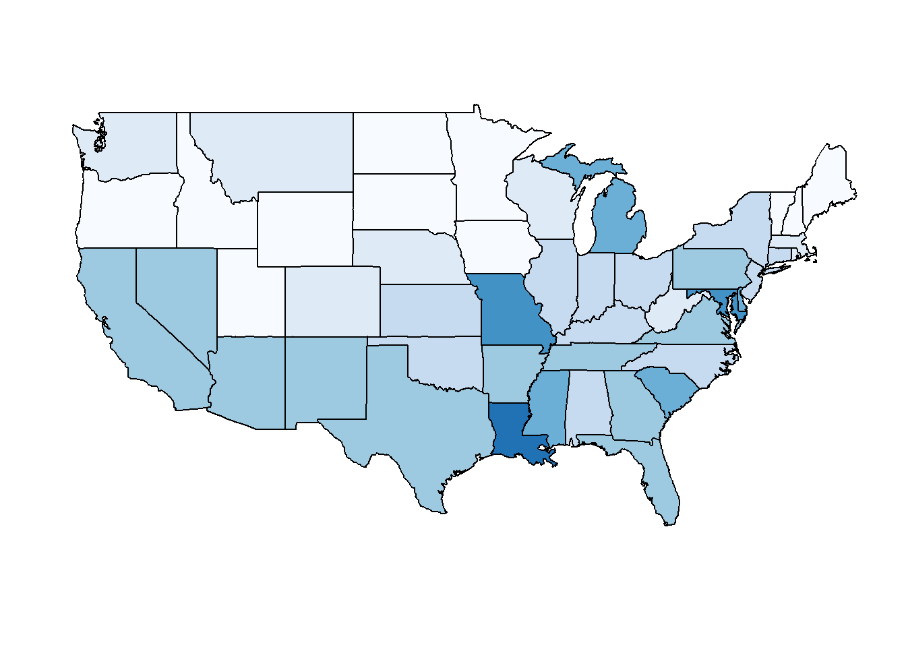

Welcome Back to R
Readings
As noted in the syllabus, your readings will be assigned each week in this area. For this initial week, please read the course content. Read closely the following:
Guiding Question
For future lectures, the guiding questions will be more pointed and at a higher level to help steer your thinking. Here, we want to ensure you remember some basics and accordingly the questions are straightforward.
- How does this course work?
- Do you remember anything about
R? - What are the different data types in
R? - How do you index specific elements of a vector? Why might you want to do that?
A Brief Introduction to SSC442
About Me
Me: My primary area of expertise is economics. In brief, I am a behavioral economist whose research examines how cognitive biases and erroneous social beliefs influence decision-making and our interactions with others. In my research, I utilize a mix of theoretical modeling and experimental studies. These approaches guide the work in the Spartan Psychology and Economics Advanced Research (SPEAR) lab, which I formed in 2023. My teaching emphasizes how psychological factors shape economic choices (EC404; EC895) and the importance of rigorous empirical methods (SSC442).
While my research occasionally touches the topics in the course, it mostly utilizes tools and techniques from this course as tools.
This Course
The syllabus is posted on the course website. I’ll walk through highlights now, but read it later – it’s long.
- But eventually, please read it. It is required.
Syllabus highlights:
This class is totally, unapologetically a work in progress. Material is a mish-mash of stuff from courses offered at Caltech, Stanford, Harvard, and Duke…so, yeah, it will be challenging. Hopefully, you’ll find it fun! Because this is an ever-evolving field, there may be more hiccups than you might otherwise expect:
Some of the lectures will be too long or too short.
Some of the lectures won’t make sense at first
Some of the time I’ll forget what I intended to say and awkwardly stare at you for a few moments (sorry).
I promise to improve the course with feedback, so if you have comments please speak up.
- Your grade is composed of weekly writings, labs, and projects (see syllabus page for exact points)
- Weekly writings: 19%
- Participation: 4%
- Labs: 32%
- Projects: 45%
- This structure is designed to give ~55% “for free”. Success on the projects will require real work.
- Labs consist of a practical implementation of something we’ve covered in the course (e.g., code your own Recommender System).
Course Structure
Here’s how each week will work: before class on Tuesday, you’ll read the content for the week. On Tuesday, you’ll come to lecture. Before Thursday, you’ll read the example for the week, and on Thursday you’ll come to lecture ready to participate with a charged laptop. On Saturday night by 11:59pm, you’ll turn in your Weekly Writing assignment responding to the weekly writing prompt given during class on Tuesday or Thursday, rendered to PDF by RMarkdown and using the proper template (see assignments). By Monday at 11:59pm, you’ll turn in your Lab assignment, also using the RMarkdown template.
You’ll repeat this each week until we’re out of labs. If a holiday occurs on a due date, then the assignment or lab is due the next non-holiday day at 11:59pm or as otherwise noted. You’ll also work with your assigned group on the Group Project. We’ll assign groups after the drop deadline has passed.
Now, let’s look at the Syllabus for important information about office hours
Grading
Grading: come to class.
If you complete all assignments and attend all class dates, I suspect you will do very well. Given the way the syllabus is structured, I conjecture that the following is a loose guide to grades:
4.0 Turned in all assignments with good effort, worked hard on the projects and was proud of final product.
3.5 Turned in all assignments with good effort, worked a bit on the projects and was indifferent to final product.
3.0 Turned in all assignments with some effort, worked a bit on the projects and was shy about final product.
< 3.0 Very little effort, or did not turn in all assignments, worked very little on the projects and was embarassed by final product.
…of course, failing to turn in assignments can lead to a grade dramatically lower than just a 3.0.
More About This Course
There are sort of two texts for this course and sort of zero.
The “main text” is this website. The secondary text is Introduction to Statistical Learning (see Syllabus), which is free and available online. The secondary text is substantially more difficult, but also free online. Assigned readings can be found on the course website under “Content”.
Please please please please please: ask questions during class.
Most ideas will be new.
Sometimes (often?) the material itself will be confusing or interesting—or both!
Note: If I find that attendance is terrible, I may have to start incorporating attendance into participation.
I encourage measured feedback and thoughtful responses to questions. If I call on you and you don’t know immediately, don’t freak out. If you don’t know, it’s totally okay to say you don’t know.
Things To Remember (tl;dr)
Do your weekly writing due Saturday. Begin working on Lab 0 as it is due Monday.
Keys from the syllabus:
- E-mail isn’t the ideal solution for technical problems
- If you do send an email, please start it with
[SSC442]and the subject.
- If you do send an email, please start it with
- No appointments necessary for regularly scheduled office hours; or by appointment and via Slack
- TA office hours are great as well. Our TA has experience in this course.
- Notify me immediately if you need accommodations because of RCPD or religious convictions; If you approach me at the last minute, I may not be able to help.
Despite my hard-assness in these introductory notes: I’m here to help and I am not in the business of giving bad grades for no reason.
What is “Data Analytics”?
I keep saying that the sexy job in the next 10 years will be statisticians. And I’m not kidding.
Hal Varian, Chief Economist, Google
How do you define “data analytics”? (Not a rhetorical question!)
- This course will avoid this nomenclature. It is confusing and imprecise. But you signed up (suckers) and I owe an explanation of what this course will cover.
Some “data analytics” topics we will cover:
- Linear regression: il classico.
- LASSO
- Models of classification or discrete choice.
- Analysis of ``wide’’ data.
- Decision trees and other non-linear models.
Starting point for this course
Better utilizing existing data can improve our predictive power whilst providing interpretable outputs for considering new policies.
WARNING: Causation is tough and we will spend the entire course warning you to avoid making causal claims!
The Pros and Cons of Correlation
Pros:
- Nature gives you correlations for free.
- In principle, everyone can agree on the facts.
Cons:
- Correlations are not very helpful.
- They show what has happened, but not why.
- For many things, we care about why. The social science perspective asks “why?”
Why a Correlation Exists Between X and Y
\(X \rightarrow Y\) X causes Y (causality)
\(X \leftarrow Y\) Y causes X (reverse causality)
\(Z \rightarrow X\); \(Z \rightarrow Y\) Z causes X and Y (common cause)
\(X \rightarrow Y\); \(Y \rightarrow X\) X causes Y and Y causes X (simultaneous equations)
A Case Study in Prediction
Example: a firm wishes to predict user behavior based on previous purchases or interactions.
Small margins \(\rightarrow\) huge payoffs when scaled up.
\(.01\% \rightarrow\) $10 million.
Not obvious why this was true for Netflix; quite obvious why this is true in financial markets.
From a computer science perspective, it only matters that you get that improvement ($$). From a social science perspective, we would want to use the predictions to learn more about why.
More Recent Examples of Prediction
- Identify the risk factors for prostate cancer.
- Classify a tissue sample into one of several cancer classes, based on a gene expression profile.
- Classify a recorded phoneme based on a log-periodogram.
- Predict whether someone will have a heart attack on the basis of demographic, diet and clinical measurements.
- Customize an email spam detection system.
- Identify a hand-drawn object.
- Determine which oscillations of stellar luminosity are likely due to exoplanets.
- Identify food combinations that cause spikes in blood glucose level for an individual.
- Establish the relationship between salary and demographic variables in population survey data.
An Aside: Nomenclature
Machine learning arose as a subfield of Artificial Intelligence.
Statistical learning arose as a subfield of Statistics.
There is much overlap; however, a few points of distinction:
Machine learning has a greater emphasis on large scale applications and prediction accuracy.
Statistical learning emphasizes models and their interpretability, and precision and uncertainty.
- But the distinction has become more and more blurred, and there is a great deal of “cross-fertilization”.
Obviously true: machine learning has the upper hand in marketing.
Learning from Data
The following are the basic requirements for statistical learning:
- A pattern exists.
- This pattern is not easily expressed in a closed mathematical form.
- You have data.
Case study 1: Global Renewable Energy Production
Imagine you are evaluating countries for a potential investment in renewable energy. Headlines like “Renewable Energy Capacity Growth Worldwide” have piqued your interest. Reports from various sources show diverse graphs and charts and you’re curious about the underlying data. You want to know which countries are leading the way in renewable energy production and which are lagging behind. You want to know which countries are growing their renewable energy production the fastest. In short: you want to know which countries are the best bets for investment. You might see something like the following:
You might want to look into the underlying data (in this case, fabricated) and think about what to do next. In this sense, you have learned from data.
Case study 2: US homicides by firearm
Imagine you live in Europe (if only!) and are offered a job in a US company with many locations in every state. It is a great job, but headlines such as US Gun Homicide Rate Higher Than Other Developed Countries1 have you worried. Fox News runs a scary looking graphic, and charts like the one below only add to you anxiety:

Or even worse, this version from everytown.org:

But then you remember that (1) this is a hypothetical exercise; (2) you’ll take literally any job at this point; and (3) Geographic diversity matters – the United States is a large and diverse country with 50 very different states (plus the District of Columbia and some lovely territories).2

California, for example, has a larger population than Canada, and 20 US states have populations larger than that of Norway. In some respects, the variability across states in the US is akin to the variability across countries in Europe. Furthermore, although not included in the charts above, the murder rates in Lithuania, Ukraine, and Russia are higher than 4 per 100,000. So perhaps the news reports that worried you are too superficial.
This is a relatively simple and straightforward problem in social science: you have options of where to live, and want to determine the safety of the various states. Your “research” is clearly policy-relevant: you will eventually have to live somewhere. In this course, we will begin to tackle the problem by examining data related to gun homicides in the US during 2010 using R as a motivating example along the way.
Before we get started with our example, we need to cover logistics as well as some of the very basic building blocks that are required to gain more advanced R skills. Ideally, this is a refresher. However, we are aware that your preparation in previously courses varies greatly from student to student. Moreover, we want you to be aware that the usefulness of some of these early building blocks may not be immediately obvious. Later in the class you will appreciate having these skills. Mastery will be rewarded both in this class and (of course) in life.
The Pre-Basics
We’ve now covered a short bit of material. The remainder of this first lecture will be covering setting up R and describing some common errors.
Footnotes
http://abcnews.go.com/blogs/headlines/2012/12/us-gun-ownership-homicide-rate-higher-than-other-developed-countries/↩︎
I’m especially partial to Puerto Rico.↩︎
Social Science Approaches to Statistical Learning
A Brief History
Suppose you are a researcher and you want to know whether prisons reduce crime.
from “A Call for a Moratorium on Prison Building” (1976)